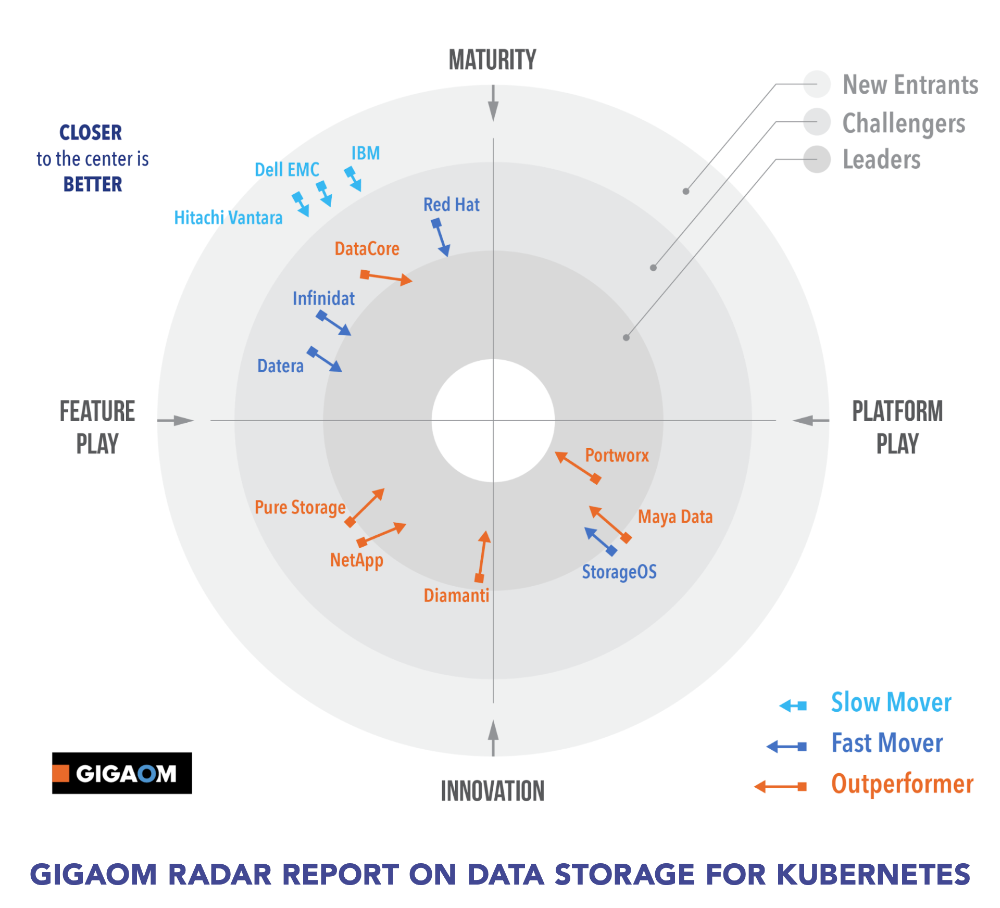

Kubernetes Storage. Cloud Native Storage¶
- Introduction
- Kubernetes Storage API Interface
- Kubernetes Storage Classes
- Kubernetes Volumes
- DoK Community
- ReadWriteMany PersistentVolumeClaims
- Ebooks
- Cloud Native Storage Solutions
- OpenShift Container Storage Operator (OCS)
- Kubernetes CSI
- Kubestr
- VolSync
- Discoblocks
- Images
- Tweets
- Videos
Introduction¶
- thenewstack.io: How Kubernetes provides networking and storage to applications
- medium: Kubernetes Storage Explained 🌟 kubernetes/volumes/claims
- thenewstack.io: A Guide to Running Stateful Applications in Kubernetes
- forbes.com: 5 Cloud Native Storage Startups To Watch Out For In 2019
- medium: Solution architect’s guide to Kubernetes persistent storage
- howtoforge.com: Storage in Kubernetes 🌟
- cncf.io: Container Attached Storage is Cloud Native Storage (CAS)
- thenewstack.io: The most popular cloud native solutions 🌟
- medium: Kubernetes Storage Performance Comparison v2 (2020 Updated) 🌟
- blocksandfiles.com: geless storage is the ‘answer’ to Kubernetes data challenges
- rancher.com: What is Cloud-Native Storage?
- softwareengineeringdaily.com: Why Is Storage On Kubernetes So Hard? 🌟
- thenewstack.io: Compute and Storage Should Be Decoupled for Log Management at Scale
- blog.min.io: Why Kubernetes Managed Object Storage Matters
- gitlab.com: Kubernetes storage provider benchmarks
- ibm.com: Using Fio to Tell Whether Your Storage is Fast Enough for Etcd
- marketplace.redhat.com: Dont treat Kubernetes storage as an afterthought: Turn to persistent container storage for high performance and availability
- thenewstack.io: Beyond Block and File: COSI Enables Object Storage in Kubernetes 🌟
- thenewstack.io: When Is Decentralized Storage the Right Choice?
- storj.io: Integrating Decentralized Cloud Storage with Duplicati
- thenewstack.io: The Biggest Gap in Kubernetes Storage Architecture?
- medium: Provisioning storage in Kubernetes
- kylezsembery.com: Persistent Storage in Kubernetes In this post I’ll briefly explain how persistent storage works in Kubernetes.
- blog.mayadata.io: Container Attached Storage (CAS) vs. Software-Defined Storage - Which One to Choose?
- thenewstack.io: Stateful Workloads on Kubernetes with Container Attached Storage 🌟
- developers.redhat.com: How to maximize data storage for microservices and Kubernetes, Part 1: An introduction 🌟
- blog.mayadata.io: Kubernetes storage basics: PV, PVC and StorageClass 🌟
- infoworld.com: Kubernetes object storage best practices Like Kubernetes itself, the underlying object storage should be distributed, decoupled, declarative, and immutable.
- ondat.io: Stateful Apps in Kubernetes are a big deal
- techgenix.com: Data Storage Management for Kubernetes - 5 movers and shakers
- ==thenewstack.io: The Growth of State in Kubernetes==
- itnext.io: Highly Available NFS cluster in Kubernetes, a cloud vendor independent storage solution
- armosec.io: Data Storage in Kubernetes Kubernetes in cooperation with cloud vendor infrastructure provides flexible mechanisms for data storage and management. It is up to the users to decide which mechanism best fits their application needs. However, the security side of the data storage falls completely under the user’s responsibility. Most of the default settings are wide open and require significant security expertise to protect your applications from data leakage.
- ==infoq.com: Best Practices for Running Stateful Applications on Kubernetes==
- blog.flant.com: Comparing Ceph, LINSTOR, Mayastor, and Vitastor storage performance in Kubernetes Are you looking for an easy-to-use, reliable block-type storage for your cluster?
- medium.com/@amir.ilw: Kubernetes Storage Migration 🌟 Storage migrations, storage path changes or even moving to a newer faster CSI can be overwhelming. In this article, you'll learn the required steps, how to avoid the pitfalls of immutable volumes and how to plan your next migration.
- discoblocks.io 🌟 - ondat/discoblocks Open Source declarative disk configuration system for Kubernetes. Discoblocks is an open-source declarative disk configuration system for Kubernetes helping to automate CRUD (Create, Read, Update, Delete) operations for cloud disk device resources attached to Kubernetes cluster nodes.
- medium.com/geekculture: Storage | Kubernetes A Deep Dive into Kubernetes Storage
- itnext.io: Temporary Storage for Kubernetes Pods Or emptyDir vs. container File System. Kubernetes applications might need some temporary storage that could be discarded after a container is stopped/removed. In this article, you will compare emptyDir and the container's local storage.
- ==container-object-storage-interface.github.io: Kubernetes COSI== [ARCHIVED] Kubernetes Container Object Storage Interface (COSI) is a standard for exposing object storage to containerized workloads running in Kubernetes. COSI is meant to be a departure from the CSI since the latter does not work well with object storage.
- medium.com/nerd-for-tech: Persistence with Kubernetes
- cncf.io: Kubernetes storage is complex, but it’s getting better
- ==yuminlee2.medium.com: Kubernetes: Storage== In Kubernetes, pods are temporary and any data stored within them is lost when they’re deleted or restarted. To avoid this, use persistent storage options such as PVs(Persistent Volumes)and PVCs(Persistent Volume Claims). PVs are storage resources with an independent lifecycle, while PVCs are requests for storage. Use them for simplified storage management and scaling. Provisioning persistent volumes can be static or dynamic. StorageClass defines the provisioner, parameters, and reclaim policy for dynamically provisioned PVs.
- medium.com/kubernetes-deveops: Kubernetes — Deploying Application with Persistent Storage Implementing Storage Controller for Auto-Provisioning
Kubernetes Storage API Interface¶
- danielmangum.com: K8s ASA: The Storage Interface The primary function of the Kubernetes API Server is to ingest data, store it, and then return it when requested. In this article, you will learn how the API Server stores data.
Kubernetes Storage Classes¶
Kubernetes Volumes¶
- itnext.io: Kubernetes: PersistentVolume and PersistentVolumeClaim — an overview with examples
- thenewstack.io: Persistent Volumes: Separating Compute and Storage
- developers.redhat.com: Persistent storage in action: Understanding Red Hat OpenShift’s persistent volume framework 🌟
- itnext.io: Resizing StatefulSet Persistent Volumes with zero downtime 🌟
- github.com/kubernetes-sigs: Local Persistence Volume Static Provisioner 🌟 The local volume static provisioner manages PersistentVolume lifecycle for pre-allocated disks by detecting and creating PVs for each local disk on the host and cleaning up the disks when released. It does not support dynamic provisioning
- shuanglu1993.medium.com: What happens when volumeManager in the kubelet starts? In this deep-dive, you will learn how the volumeManager sync loop is initialized and starts 3 async calls to maintain the objects 'desiredStateOfWorld' and 'actualStateOfWorld' and 'reconcile' the volumes on the node to the desired state.
- linkedin.com/pulse: What are Kubernetes Persistent Volumes?
- blog.newrelic.com: Kubernetes Fundamentals, Part 5: Working with Kubernetes Volumes
- ==medium.com/codex: Kubernetes Persistent Volume Explained== Learn what a Persistent Volume is and how to create a persistent volume from a storage class. Then, learn how to create a persistent volume claim and how to attach the PVC to a Pod:
- How to create a persistent volume from a storage class
- How to create a persistent volume claim
- How to attach the PVC to a Pod
- giffgaff.io: Resizing StatefulSet Persistent Volumes with zero downtime 🌟
- kubermatic.com: Keeping the State of Apps 1: Introduction to Volume and volumeMounts In this blog post, you will get a hands-on practice and learn how to provide persistent storage in the form of different volumes to the Pods.
- blog.cloudnloud.com: Kubernetes Volume
- ==adamtheautomator.com: Effortless Storage Management With Kubernetes PVC== 🌟 In this tutorial, you'll learn about Kubernetes PVC and set up a persistent volume for a MySQL database. You'll also confirm that the data persists even after deleting and recreating the pods.
- portworx.com: Kubernetes Persistent Volume Tutorial by Portworx
- What is K8s PV?
- How do they differ from k8s volumes?
- Why would you use persistent volumes?
- How to get started using persistent volumes?
- openebs/zfs-localpv CSI Driver for dynamic provisioning of Persistent Local Volumes for Kubernetes using ZFS.
- devineer.medium.com: Get to Grips with Kubernetes Volumes: A Practical Tutorial
- airplane.dev: How to use Kubernetes ephemeral volumes & storage 🌟 This tutorial will discuss how Kubernetes handles ephemeral storage and how these volumes are provisioned in operating clusters.
- blog.devgenius.io: When K8s pods are stuck mounting large volumes
- spacelift.io: Kubernetes Persistent Volumes – Tutorial and Examples
Kubernetes Volumes Guide¶
- matthewpalmer.net: Filesystem vs Volume vs Persistent Volume 🌟 This is a guide that covers:
- How to set up and use volumes in Kubernetes
- What are persistent volumes, and how to use them
- How to use an NFS volume
- Shared data and volumes between pods
DoK Community¶
- ==DoK Community== 🌟
- Kubernetes was originally designed to run stateless workloads. Today, it is increasingly used to run databases and other stateful workloads. Yet despite the success of these early adopters, there remain few known good practices for running data on Kubernetes.
- After discussions with thousands of companies and individuals running data workloads on Kubernetes we’ve come to see that there is a need for a sharing of patterns and concerns about how to build and operate data-centric applications on Kubernetes. As a result, the Data on Kubernetes Community (DoKC) was born.
- ==dok.community: Data on Kubernetes 2021== 🌟 Insights from over 500 executives and technology leaders on how Kubernetes is being used for data and the factors driving further adoption
ReadWriteMany PersistentVolumeClaims¶
- Create ReadWriteMany PersistentVolumeClaims on your Kubernetes Cluster 🌟 Kubernetes allows us to provision our PersistentVolumes dynamically using PersistentVolumeClaims. Pods treat these claims as volumes. The access mode of the PVC determines how many nodes can establish a connection to it. We can refer to the resource provider’s docs for their supported access modes.
- Digital Ocean: Kuberntes PVC ReadWriteMany access mode alternative
Ebooks¶
Cloud Native Storage Solutions¶
-
Ceph: A Distributed Object, Block, and File Storage Platform 🌟 - This repository contains the source code for Ceph, a powerful and highly scalable distributed storage system. Ceph provides object, block, and file storage interfaces, making it suitable for a wide range of cloud-native and enterprise storage needs, including integration with Kubernetes.
Rook¶
- Rook
- itnext.io: Using Rook On A K3s Cluster
- medium.com/@abdulfayis: storage Orchestration for Kubernetes
Robin¶
Reduxio¶
Portworx¶
StorageOS¶
OpenEBS¶
- OpenEBS extends the benefits of software-defined storage to cloud native through the container attached approach.
- MayaData Founder of OpenEBS
- goglides.io: Running OpenEBS in Kubernetes
- OpenEBS Features and Benefits OpenEBS is cloudnative storage for stateful applications on K8s where "cloud native" means following a loosely coupled architecture. As such the normal benefits to cloud native, loosely coupled architectures apply.
- openebs/dynamic-localpv-provisioner: Dynamic Kubernetes Local Persistent Volumes Dynamic Local Volumes for Kubernetes Stateful workloads.
- openebs/lvm-localpv CSI Driver for dynamic provisioning of Persistent Local Volumes for Kubernetes using LVM.
LightOS¶
Longhorn¶
- Longhorn
- thenewstack.io: Rancher Donates its ‘Longhorn’ Kubernetes Persistent Storage Software to CNCF. Gluster and Ceph were “designed to be run by some storage admin. In the Kubernetes world, a lot of these things tend to be deployed by DevOps teams, so (the storage layer) needs to be a lot more lightweight and a lot simpler.” — Rancher Labs CEO Sheng Liang.
- Longhorn Simplifies Distributed Block Storage in Kubernetes
- containerjournal.com: Rancher Labs Adds Support for Longhorn Storage on Kubernetes Clusters
- aesher9o1.medium.com: Autoscale large images faster using Longhorn (distributed storage)
- medium.com/@abdelrhmanahmed131: Longhorn — Distributed Block Storage for K8s
IBM Spectrum Storage Suite¶
- IBM Spectrum IBM Spectrum Storage software for data-driven architecture. A complete storage software family with AI-infused capability that changes the economics of storage on-prem and in the hybrid multicloud.
- redbooks.ibm.com: IBM Storage for Red Hat OpenShift. IBM block storage & IBM Spectrum Scale
- searchstorage.techtarget.com: IBM Spectrum
Linbit¶
Kadalu¶
- Kadalu A lightweight Persistent storage solution for Kubernetes / OpenShift using GlusterFS in background. Kadalu is a project to provide Persistent Storage in Kubernetes. The Kadalu operator deploys CSI pods, and gluster storage pods
IOMesh¶
- iomesh.com
- blocksandfiles.com: Kubernetes storage: SmartX’s IOMesh beats Portworx, Longhorn and OpenEBS
- iomesh.com: Outperforming Peer Products, IOMesh Takes Cloud Native Storage to the Next Level
MinIO¶
- min.io Multi-Cloud Object Storage. MinIO offers high-performance, S3 compatible object storage. Native to Kubernetes, MinIO is the only object storage suite available on every public cloud, every Kubernetes distribution, the private cloud and the edge. MinIO is software-defined and is 100% open source under GNU AGPL v3.
- blog.min.io: Best Practices for Kubernetes Object Storage
- blog.min.io: Cloud-Native Object Storage Architectures: Single-Tenant vs Multi-Tenant
NetApp Data Store¶
Stork Storage Operator¶
- libopenstorage/stork: Stork - Storage Operator Runtime for Kubernetes Stork - Storage Orchestration Runtime for Kubernetes
Curve - OpenCurve¶
- Curve: opencurve.io Curve is a high-performance, lightweight-operation, cloud-native open source distributed storage system for Kubernetes/OpenStack. Curve can also be used as a cloud storage middleware using S3-compatible object storage as a data storage engine.
simplyblock¶
- simplyblock: simplyblock.io Simplyblock is a NVMe over TCP (NVMe/TCP) based disaggregated and cloud-native storage solution with high-performance and predictable low latency block storage for Kubernetes.
OpenShift Container Storage Operator (OCS)¶
OCS 3 (OpenShift 3)¶
- OpenShift Container Storage based on GlusterFS technology.
- Not OpenShift 4 compliant: Migration tooling will be available to facilitate the move to OCS 4.x (OpenShift Gluster APP Mitration Tool).
OCS 4 (OpenShift 4)¶
- OCS Operator based on Rook.io with Operator LifeCycle Manager (OLM).
- Tech Stack:
- Rook (don't confuse this with non-redhat "Rook Ceph" -> RH ref).
- Replaces Heketi (OpenShift 3)
- Uses Red Hat Ceph Storage and Noobaa.
- Red Hat Ceph Storage
- Noobaa:
- Red Hat Multi Cloud Gateway (AWS, Azure, GCP, etc)
- Asynchronous replication of data between my local ceph and my cloud provider
- Deduplication
- Compression
- Encryption
- Rook (don't confuse this with non-redhat "Rook Ceph" -> RH ref).
- Backups available in OpenShift 4.2+ (Snapshots + Restore of Volumes)
- OCS Dashboard in OCS Operator
Kubernetes CSI¶
- kubernetes-csi.github.io Kubernetes-CSI is a community repository containing projects to enable CSI support in Kubernetes.
- github.com/kubernetes-csi Kubernetes specific Container-Storage-Interface (CSI) components
- SMB CSI Driver for Kubernetes This driver allows Kubernetes to access SMB Server on both Linux and Windows nodes.
- github.com/yandex-cloud: CSI for S3 This is a Container Storage Interface (CSI) for S3 (or S3 compatible) storage. This can dynamically allocate buckets and mount them via a fuse mount into any container.
- sklar.rocks: How the CSI (Container Storage Interface) Works
Kubestr¶
- kubestr.io Kubestr is a collection of tools to discover, validate and evaluate your kubernetes storage options.
- blog.kasten.io: Benchmarking and Evaluating Your Kubernetes Storage with Kubestr
VolSync¶
- VolSync 🌟 Asynchronous data replication for Kubernetes volumes. VolSync asynchronously replicates Kubernetes persistent volumes between clusters using either rsync or rclone. It also supports creating backups of persistent volumes via restic.
- next.redhat.com: Introducing VolSync: your data, anywhere VolSync, a new storage-agnostic utility for exporting and importing objects from one Kubernetes namespace to another, even across clusters!
Discoblocks¶
- Discoblocks: ondat.io/discoblocks - github.com/ondat/discoblocks Discoblocks is an open-source declarative disk configuration system for Kubernetes helping to automate CRUD (Create, Read, Update, Delete) operations for cloud disk device resources attached to Kubernetes cluster nodes.
Images¶
Click to expand!

Tweets¶
Click to expand!
General rule of thumb: there is no such thing as persistent storage in Kubernetes.
— Richard North (@whichrich) January 7, 2022